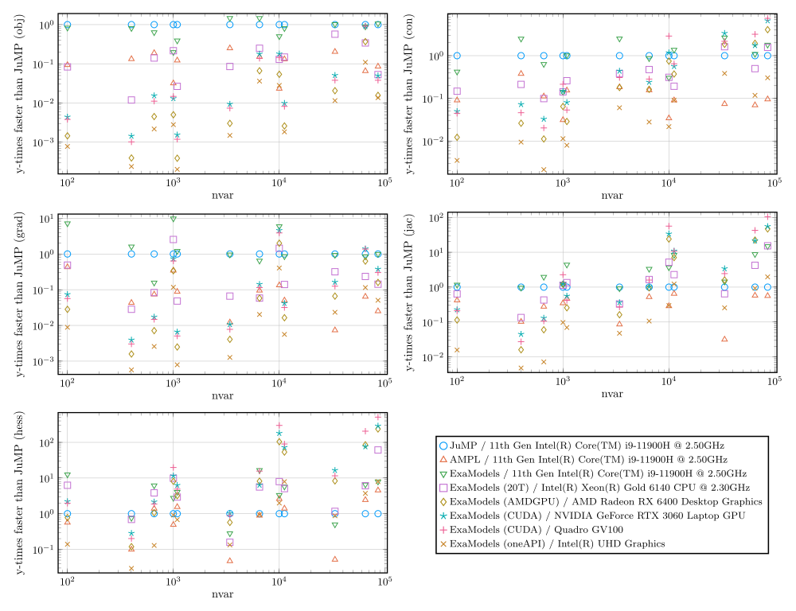

Introduction
Welcome to the documentation of ExaModels.jl
ExaModels runs on julia VERSION ≥ v"1.9"
Please help us improve ExaModels and this documentation! ExaModels is in the early stage of development, and you may encounter unintended behaviors or missing documentations. If you find anything is not working as intended or documentation is missing, please open issues or pull requests or start discussions.
What is ExaModels.jl?
ExaModels.jl is an algebraic modeling and automatic differentiation tool in Julia Language, specialized for SIMD abstraction of nonlinear programs. ExaModels.jl employs what we call SIMD abstraction for nonlinear programs (NLPs), which allows for the preservation of the parallelizable structure within the model equations, facilitating efficient automatic differentiation either on the single-thread CPUs, multi-threaded CPUs, as well as GPU accelerators. More details about SIMD abstraction can be found here.
Key differences from other algebraic modeling tools
ExaModels.jl is different from other algebraic modeling tools, such as JuMP or AMPL, in the following ways:
- Modeling Interface: ExaModels.jl requires users to specify the model equations always in the form of
Generators. This restrictive structure allows ExaModels.jl to preserve the SIMD-compatible structure in the model equations. This unique feature distinguishes ExaModels.jl from other algebraic modeling tools. - Performance: ExaModels.jl compiles (via Julia's compiler) derivative evaluation codes tailored to each computation pattern. Through reverse-mode automatic differentiation using these tailored codes, ExaModels.jl achieves significantly faster derivative evaluation speeds, even when using CPU.
- Portability: ExaModels.jl goes beyond traditional boundaries of
algebraic modeling systems by enabling derivative evaluation on GPU accelerators. Implementation of GPU kernels is accomplished using the portable programming paradigm offered by KernelAbstractions.jl. With ExaModels.jl, you can run your code on various devices, including multi-threaded CPUs, NVIDIA GPUs, AMD GPUs, and Intel GPUs. Note that Apple's Metal is currently not supported due to its lack of support for double-precision arithmetic.
Thus, ExaModels.jl shines when your model has
- nonlinear objective and constraints;
- a large number of variables and constraints;
- highly repetitive structure;
- sparse Hessian and Jacobian.
These features are often exhibited in optimization problems associated with first-principle physics-based models. Primary examples include optimal control problems formulated with direct subscription method [1] and network system optimization problems, such as optimal power flow [2] and gas network control/estimation problems.
Performance Highlights
ExaModels.jl significantly enhances the performance of derivative evaluations for nonlinear optimization problems that can benefit from SIMD abstraction. Recent benchmark results demonstrate this notable improvement. Notably, when solving the AC OPF problem for a 9241 bus system, derivative evaluation using ExaModels.jl on GPUs can be up to two orders of magnitude faster compared to JuMP or AMPL. Some benchmark results are available below. The following problems are used for benchmarking:
- LuksanVlcek problem
- Quadrotor control problem
- Distillation column control problem
- AC optimal power flow problem

Supported Solvers
ExaModels can be used with any solver that can handle NLPModel data type, but several callbacks are not currently implemented, and cause some errors. Currently, it is tested with the following solvers:
Documentation Structure
This documentation is structured in the following way.
- The remainder of this page highlights several key aspects of ExaModels.jl.
- The mathematical abstraction–-SIMD abstraction of nonlinear programming–-of ExaModels.jl is discussed in Mathematical Abstraction page.
- The step-by-step tutorial of using ExaModels.jl can be found in Tutorial page.
- This documentation does not intend to discuss the engineering behind the implementation of ExaModels.jl. Some high-level idea is discussed in a recent publication, but the full details of the engineering behind it will be discussed in the future publications.
Citing ExaModels.jl
If you use ExaModels.jl in your research, we would greatly appreciate your citing this preprint.
@misc{shin2023accelerating,
title={Accelerating Optimal Power Flow with {GPU}s: {SIMD} Abstraction of Nonlinear Programs and Condensed-Space Interior-Point Methods},
author={Sungho Shin and Fran{\c{c}}ois Pacaud and Mihai Anitescu},
year={2023},
eprint={2307.16830},
archivePrefix={arXiv},
primaryClass={math.OC}
}Supporting ExaModels.jl
- Please report issues and feature requests via the GitHub issue tracker.
- Questions are welcome at GitHub discussion forum.